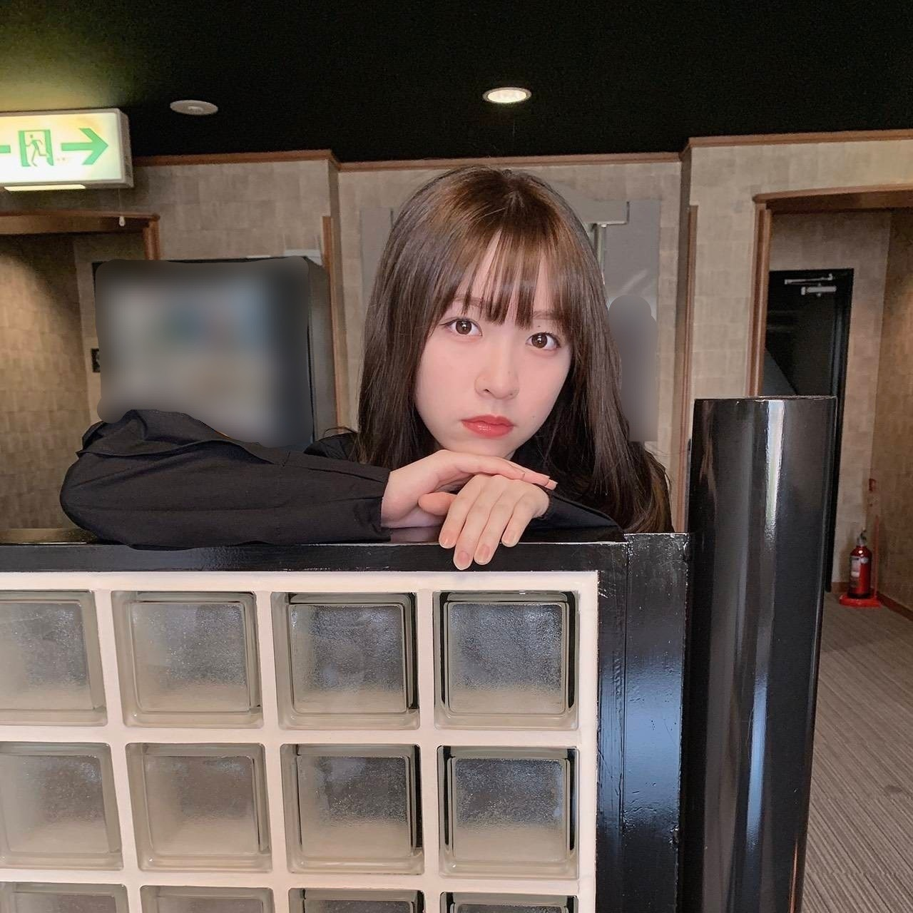
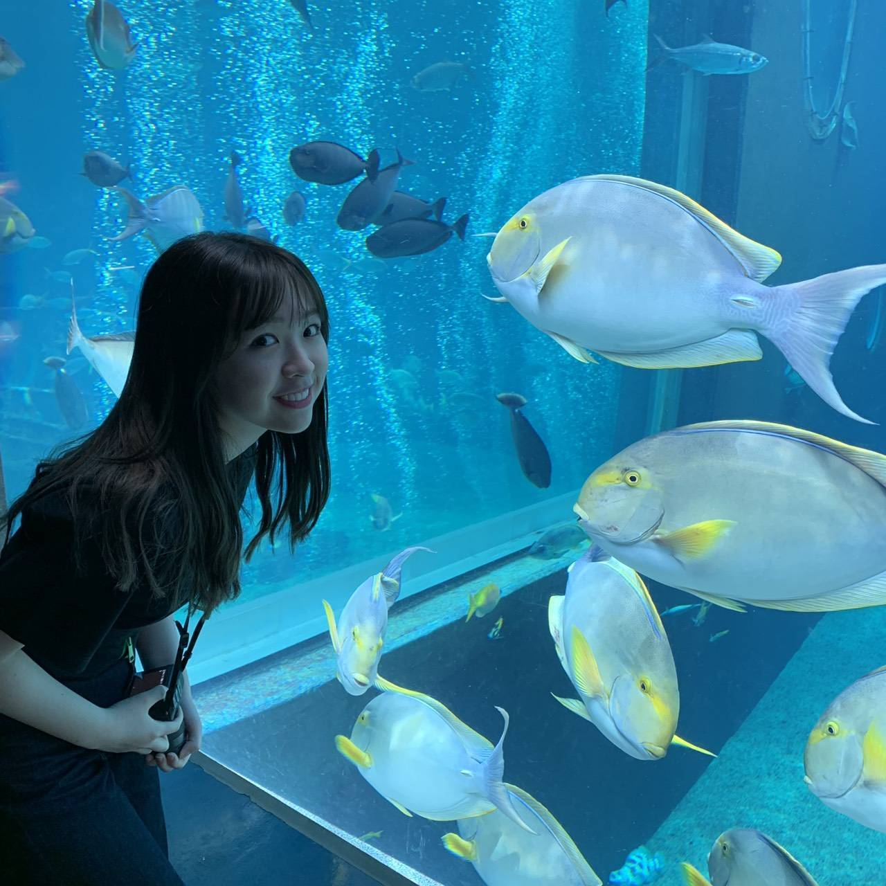
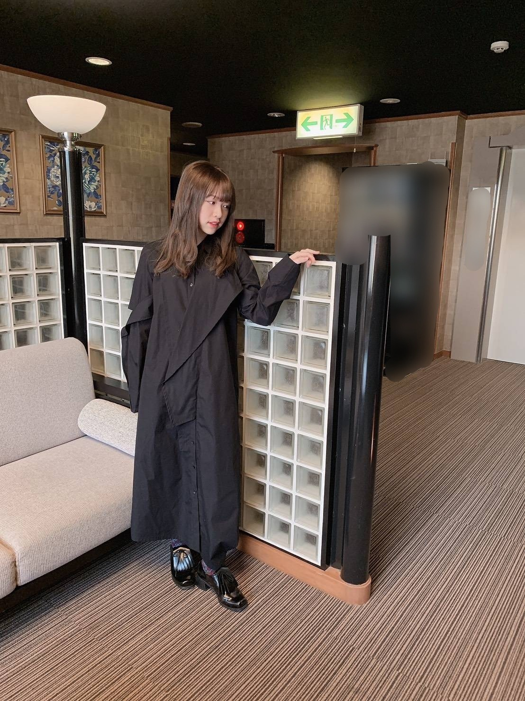

2019/0423Tue一言芳恩
先日、2日程お休みがあったので
久しぶりに家族旅行、箱根へ行って参りました

ハウスダストのおかげか、
顔のコンディションが整わなかったけれど。笑
庭園があったり小さな駅があったり
私の好きな雰囲気で凄く良かった！

私、本当に水族館が好きで
今回も家族に無理言って少し遠い水族館まで
連れて行ってもらいました
水族館が好き、というより
ウミガメ好きという感じですかね。
ウミガメもこの日見つけました！2匹いた！
私のカメラでしっかりと抑えました。
ウミガメを見る為に行っているようなもの。

曇っておりましたが、とても綺麗な景色でした

皆様は今まで行った中で
ここは良かったな〜ここは美味しかった！
という場所はありますか？
是非、教えて下さい(^ ^)
みり愛
2019/04/23 20:06


コメント(454)
えぇ～やっぱ九州だな～～～
九州神(><)
自分は北海道の富良野に行った時の景色がすごく感動しました！！
みり愛ちゃんおしゃれだね！
BRODY買ったよ
これからも応援してます！
いやいや、十分仕上がってるっしよ。
どんどん美人になっていくし。
止まらないなぁ。
箱根はいい所だよね！！
熱海も前に行ったけど最高だった！！
もし良かったら考えてくれると嬉しいな！
僕は名古屋良かったなぁと思いました。
いや、めちゃくちゃ可愛いわ！(笑)
温泉っていいね〜、俺も行きたいな〜
ちなみに、旅行で好きな場所は北海道かなやっぱり。ご飯美味しいし冬の雪はいいし、夏は涼しいし！
どの季節行っても楽しい！やっぱいいよね〜
ってことでここら辺で！今週の日曜握手いきます！よろしくね！
ダイチ
今週末の握手会楽しみにしてます！
個握は久々なので話したいこともいっぱいあるし、おめでとうも言いたいし
選抜たのしみにしてるね！！
頑張って！！
コメント遅くなってごめんね。
箱根旅行すごい羨ましいなー。
最近家族で行ったんだだけど石川県の能登はすごいオススメだよ！
海鮮がすごい美味しかった。
のどぐろもあればぶりとかもいっぱい食べちゃった。
水族館いつかみり愛といってみたいとか叶わないこと言ってみる。
今じゃ王道だけど金沢かな
俺も箱根最近行った〜！
俺のオススメは東京ドーム笑笑
ホテル名で大変恐縮なのですが、長崎県にある「天空の船」というホテルの庭から見える絶景がオススメです。
疲れが間違いなく取れますし、大分余計なお世話かもしれませんが親御さんも喜ぶと思います。
体調にはお気をつけくださいませ。
景色好きのみり愛にはぴったりじゃないかな？？
今度一回行ってみて！！
遅くなったけど、選抜入りおめでと！
自分の事のように嬉しかったよ
行ったことあるところで楽しかったのは、石川かな。
刺身、寿司とか定番の物食べたり、車で走れる浜辺行ったりめっちゃ楽しかった！！！
機会あったら行ってみて！
またコメントするね
23枚目楽しみにしています♥️
仲良いのが伝わってくるね(*´∇｀*)
俺は忙しくて何年も旅行行ってないけど、やっぱ1番好きなのは空気も良くて、食べ物も美味しい北海道かな(≧∇≦)
でもちゃんと田舎らしいとこあるんですよ。
え？君は田舎者って？そーなんですよ。
あはは…だからなんだって話なんですけどもね。
28日のアルバム個握行きますね。ではまた。
箱根いいなあ！私も去年いきました
リフレッシュできたようでなにより☺︎
行ってよかったなっていうのは、山梨！
ほうとうがとっても美味しかったです^^
ほったらかし温泉も、めっちゃよかった！ぜひ！
やっぱりみり愛ちゃんの私服すきです〜〜
個握たのしみ(Ｔ_Ｔ)
今日もおつかれさま！
5年くらい前に、大分に行ったことがあって、
その時に食べた鶏料理が美味しかったなぁ…
唐揚げとか、南蛮とか、とり天とか！！
あとは、香川のうどんは全然コシが違う！
さすが本場の食感って感じ！
また行ってみたいなって思ってるよ。
また書くね
かずき
箱根行ったのいいなー！
羨ましいー！
顔のコンディション整わなくてそんなに可愛いってさすがみり愛ちゃんですね笑
水族館いいですねー！ウミガメ見てみたいですー！
僕は最近遠出はしてないけど、握手会とライブに出かけるのが1番楽しいですー
アルバム個握が待ち遠しいです！
最近ゴルゴンゾーラめちゃくちゃ聴きまくってます！
ほんとに癖になるいい曲です！
体調に気をつけて頑張ってください！
この前北海道行ったよ！
おたる水族館ってとこに行ったんやけど、カワウソが可愛かった！
他にもサヨナラの意味のヒット祈願で行ったところいくつか行ったけど、めっちゃいいとこやった！
3泊4日で2.4日目の朝ごはんは海鮮丼って贅沢した！笑
今日(23日)昼間暑いくらいやったけど、体調管理気をつけてね。
ぼむすけ
BRODY見たよー！
2期生特集めっちゃよかったぁぁ！！
最後の質問についてです！
福岡で食べた炙りもつ鍋は美味しかった、ほんとに。
美味しすぎたから握手会でもみり愛ちゃんに報告したはず。笑
あとは鳥羽（三重）の方で食べた懐石料理の伊勢海老の刺身めちゃ美味しかった！俺の地元の方なのでぜひ来てください笑
あと、香港は夜景がすごく綺麗だったので行って欲しいです。
ご飯が美味しいのはやっぱり日本です。
れお
こないだのおすそ分けはここの景色だったのかな？
綺麗だ〜︎☺︎
水族館とか全然行ってないな〜って改めて思った（笑）
水族館の写真めためた素敵！！
みり愛ちゃんのセンス好きなんだよな〜、、
今まで行ってよかったところはね〜ん〜、、
行ってよかったって言うか綺麗だな〜って思うのはやっぱりお空なんだよね〜、、
初夏位の時だから丁度今の時期くらいにボーダー聞きながらマンションの階段登って屋上まで出て真っ青な青空見た時は感動した(;_;)
場所だとやっぱりディズニー︎☺︎
夢が詰まっててステキ、、☼
最近コメントできてなかったのでちょっと長めです(ごめん)
選抜おめでとう！
本当に心から嬉しかった！
人の喜ぶところを見て幸せな気持ちになったのなんて初めてだったかもしれない笑笑
それと同時に、同じみり愛推しの人たちのことも思い浮かんで、ああ、ほんとに良かったなあ…ってなんかしみじみしてました笑笑
俺なんかなんもしてないし、握手会でもふざけてばっかりだけど、でも、みり愛を推してて本当に良かったと思ったよ！
みり愛はここで満足するわけもないだろうし、まだまだここから、今までみたいに、また一歩ずつ確実に進んでいきましょう！
同い年の誇り！本当にありがとう！
これ以上はまた握手会で話すね〜
p.s.旅行は静岡、山梨あたりがおすすめです、近いし、ご飯美味しいし、観光地多いよ☺︎
体に気をつけてね、また笑顔で会いましょう！
そっ
顔のコンディションとても良いよね。水族館は江ノ島かな？
みり愛ちゃん可愛すぎるよ！
個握宮城当たったからめっちゃ楽しみ！
楽しそうでしたな
お疲れ様でした＼(^o^)／
コンディション良くない顔って全然大丈夫じゃん？可愛いよ(*´ω｀*)
これからも頑張って(/･ω･)/
最後の写真は一瞬みなみちゃんだと思った（笑）やっぱりまだロングに見慣れてない(｡>﹏<｡)
寸又峡の夢の吊り橋が、おススメ
私も水族館すき！！！
ジンベイザメが好きなの☺︎
大阪にある海遊館行ったことある？
あそこ、大きくてジンベイザメ2匹もいていろんな魚見れてとっても楽しいの❤︎大阪行ったら絶対に行ってる！
ちなみに乃木坂のLiveの次の日も行った〜！また行きたい！
みり愛一緒に行こ？w
家族旅行いいね〜水族館いいね〜ウミガメいいね〜。笑
デート気分味合わせてくれてありがとう。笑鬼可愛くて死んだ。笑
富山県美味しいものあるし何かと観るとこあるしおすすめだよ！まあ地元やからやけど！富山県こられか〜！笑
お休み楽しめてるみたいで良かった！
みり愛ちゃんしっかり整ってるじゃないですか。
伊豆長岡とか温泉とか多いしゆっくりできるよ〜♨️
ブログ更新ありがとうございます
やはりみり愛ちゃんスタイルいいですねぇw
暗い色もお似合いです
水族館でしたら池袋がオススメされましたね。
僕は北海道なので行ったことがありませんがw
あ、でも北海道もいい所いっぱいあるのでぜひ見に来てください！
自然も豊かですし、ご飯も美味しいですし
参考にしていただければ幸いです！
またコメントします！！！
水族館いいね〜！！！
小6の修学旅行で行った以来かな〜
大学の講義で山形県の蔵王に行ったんだけど樹氷がめちゃくちゃ綺麗で楽しかったよ！
スキーで行ったんだけど、実習の合間に写真をたくさん撮ったりして楽しんだな〜
ご飯が美味しかったのは、アンダラ北海道の時に行ったジンギスカンの十鉄さん！
初めてジンギスカン食べたんだけどくせもなくバクバク行けた！
北海道だし有名だから知ってるかな？
バナナマンさんのサインあったよ〜
そんな感じです笑
インドア派な俺のオススメな場所でした〜
箱根旅行いいなぁ
水族館ってなんか雰囲気いいよね！
魚と写ってる写真みり愛めっちゃ楽しそう
みり愛の送ってくれる風景の写真
めっちゃ好きだわ！
これからもいっぱい送ってね！
ぺいです
4枚目の黒のロングコート？凄いいいね、似合ってる
今度ガチガチの私服を個握に着て欲しいなぁ、、、
僕は名古屋に行った時の味噌カツ、きしめんはとても美味しくてもう1回食べたいなぁと思ったよ
味噌カツ熱すぎて口の中火傷したけどね。
水族館、久しく行ってないから行きたいなぁ、、、
5/1の幕張個握行くからね、楽しみにしてます
ぺい
コメントする